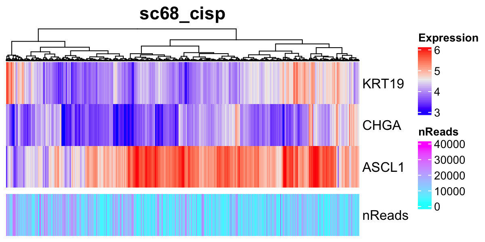
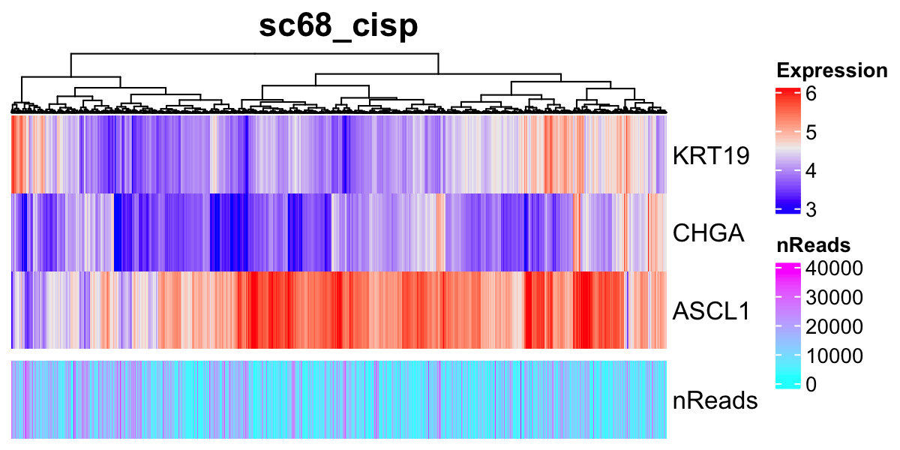

Chapter 6 Checking expression profiles of marker genes
It is important to first investigate the gene expression profiles of marker genes.
Load the data.
rm(list = ls())
source("R/function_general.R")
source("R/plot.R")
day1_norm <- readRDS(file = "backup/01_005_day1_norm_normalized.rds")
day7_hypo <- readRDS(file = "backup/02_005_day7_hypo_normalized.rds")
sc68_vehi <- readRDS(file = "backup/03_005_sc68_vehi_normalized.rds")
sc68_cisp <- readRDS(file = "backup/04_005_sc68_cisp_normalized.rds")
pbmc_4000 <- readRDS(file = "backup/05_005_pbmc_4000_normalized.rds")
pbmc_6000 <- readRDS(file = "backup/06_005_pbmc_6000_normalized.rds")Check the size of the gene-by-sample matrices.
rbind(dim(day1_norm[["data"]][["raw"]]), dim(day7_hypo[["data"]][["raw"]]),
dim(sc68_vehi[["data"]][["raw"]]), dim(sc68_cisp[["data"]][["raw"]]),
dim(pbmc_4000[["data"]][["raw"]]), dim(pbmc_6000[["data"]][["raw"]]))[1,] 5272 3663
[2,] 6213 1947
[3,] 6581 3923
[4,] 6347 2285
[5,] 6658 3815
[6,] 5169 4878The following function plot_Heatmap_GenexSamp() shows the gene-by-sample
matrix for a given gene set as a heatmap, using the results of log1p_data.
The arguments are obj, genes (genes of interest),
method (agglomeration method to be used such as complete, ward.D2,
average, etc.), show_nReads (if TRUE, the number of reads is shown),
title (title of the figure), and name (name of the color bar).
# ----------------------------------------
# For `day1_norm`
# ----------------------------------------
filename <- "figures/figure_01_0040.png"
png(file = filename, height = 600, width = 1200, res = 200)
plot_Heatmap_GenexSamp(obj = day1_norm,
genes = c("KRT19", "CHGA", "ASCL1", "NEUROD1", "YAP1"),
method = "ward.D2", show_nReads = TRUE,
title = "day1_norm", name = "Expression")
dev.off()

 
